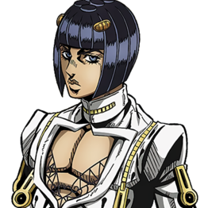
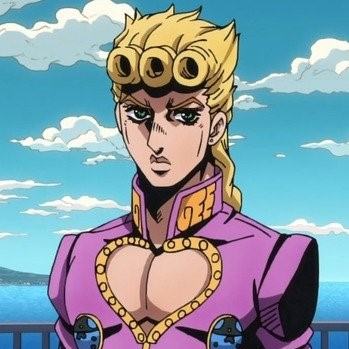
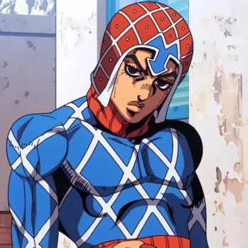
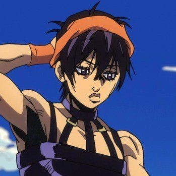
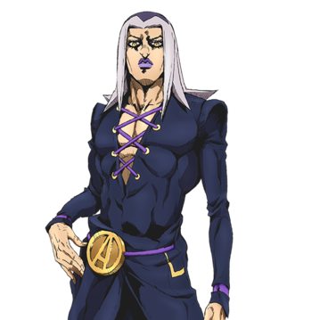
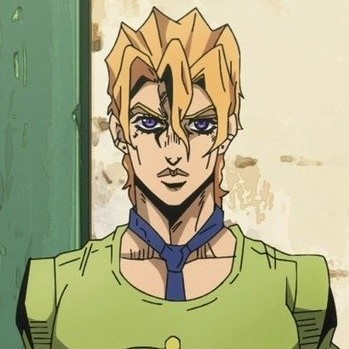

Bruno Bucciarati is the deuteragonist of Vento Aureo. He is a mobster and the leader of his own squad within the powerful Neapolitan gang, Passione.

Giorno Giovanna is the protagonist of Vento Aureo. He is the fifth JoJo of the JoJo's Bizarre Adventure series.

Guido Mista is a member of Passione and by extension Bucciarati's team, who follows Giorno and Bucciarati in their mission.

Narancia Ghirga is a member of Team Bucciarati and, by extension, Passione. Narancia follows Bucciarati in their mission to protect Trish Una due to sharing a similar tragedy as her.

Leone Abbacchio is an ex-cop and currently a member of Passione and by extension Bucciarati's team.

A young and quick-tempered strategist, Fugo is a member of Bucciarati's team.
Our activities:
Team Bucciarati's main activity is to protect their assigned territory and collect the protection money from the restaurants and port, a job at which they excelled considering Bucciarati's popularity. It is shown that people gladly salute him on the streets, and at the same time Bucciarati hears their requests for help, for instance sending a man to investigate a woman's death to grant closure to the father. It is also stated that they performed menial "gang work" too.